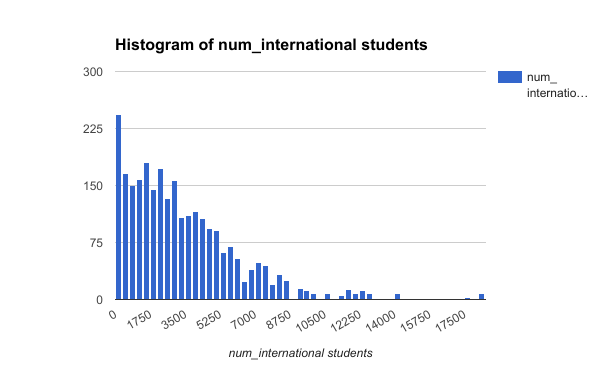
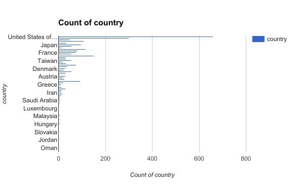

About Students in colleges around the world
Questions about the data
1. Which college in the US has the most international students?
-Purdue University

We made this to figure out which US college has the most international students.
We chose this question because we were wondering which colleges have the highest female to male ratio.
2. Which colleges have a greater female to male ratio?
-About 1405 Colleges around the world
-Some include Qatar University, Socohow University, and Rush University to name a few
3. Which country has the most colleges in their borders?
-The United States coming in with 659 colleges
